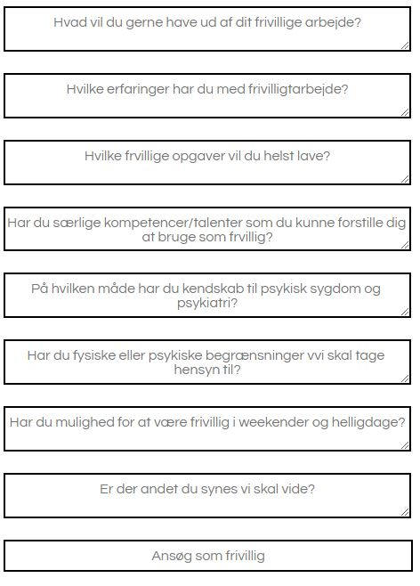

- 
-
Input Felter til Bliv frivillig siden
Dette er den kode som bliver brugt til Input felterne på bliv frivillig siden. - Stoppestedet
Dette er den kode som bliver brugt til Input felterne på bliv frivillig siden. - Stoppestedet